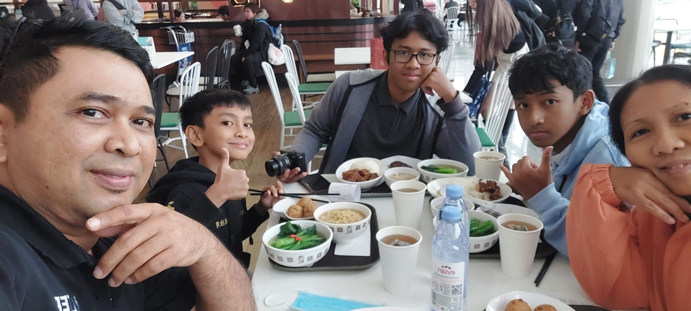

Made Oriont Fedora//24//X-RPL 1
Saya adalah murid SMK Negeri 1 Denpasar, Dengan jurusan Rekayasa Perangkat Lunak atau RPL/PPLG. Saya masuk jurusan RPL karena saya menggemari Coding dan Game developing
Saya adalah anak kedua, Saya punya kakak dan adik laki-laki. Kakak saya juga alumni SMKN 1 Denpasar jurusan Multimedia.
Saya senang coding/mengembangkan game di waktu senggang, saya menggunakan software Construct 3 untuk membuat game. Selain Coding saya juga gemar bermain video game, bermain alat musik seperti biola. saya juga gemar Cosplay dan menonton anime, Saya juga senang berpergian dan jalan-jalan
Saya memilih SMK Negeri 1 Denpasar karena itu adalah satu satunya SMK negeri yang mempunyai jurusan RPL. Saya bercita cita menjadi game developer dan sejak kecil saya sering memakai Roblox Studio dan Construct 2, maka dari itu saya berpikir jurusan RPL adalah jurusan yang tepat untuk saya. Setelah lulus SMK saya akan mengikuti tes IELTS dan melanjutkan studi di Luar Negeri, maka dari itu mulai sekarang saya sudah mengikuti persiapan tes IELTS tersebut.
Game diatas adalah projek terkini saya, Nada Nusantara : BALI adalah game yang saya buat di Scratch, game itu bertemakan Alat musik tradisional bali dan ber genre Puzzle/RPG, game ini sudah dapat dimainkan di website scratch! klik gambar untuk diarahkan ke website game. "POLAND can into space!" adalah game platformer bertemakan Geografi yang berisi humor serta stereotip, game ini saat ini masih saya kembangkan dan akan segera saya publikasi